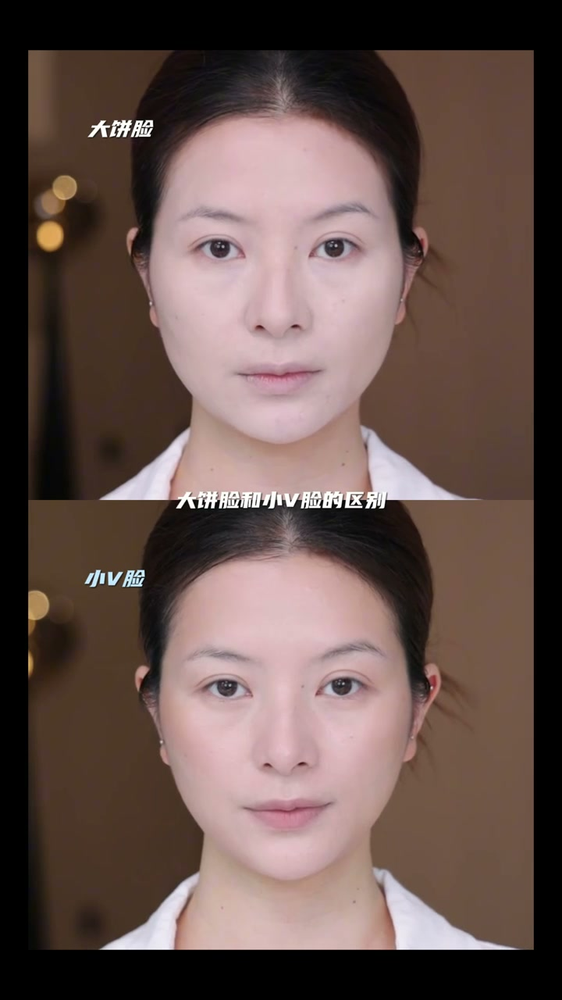
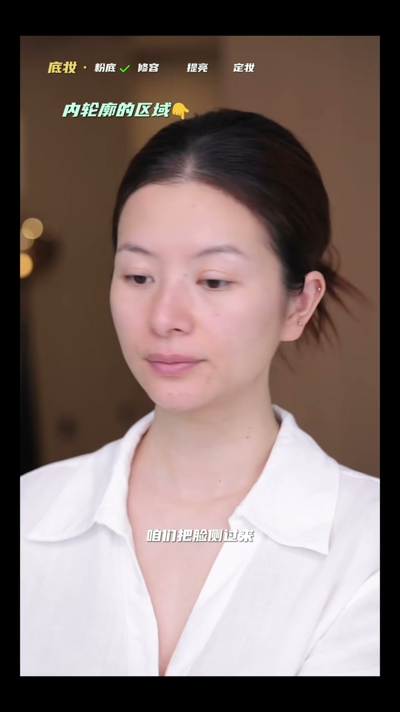
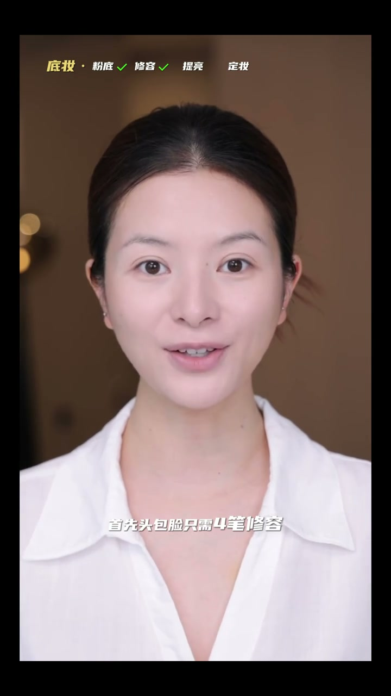
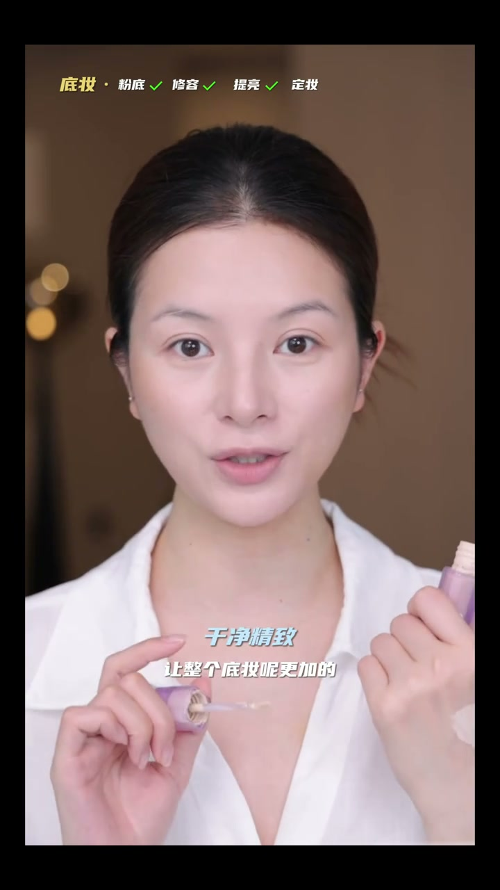
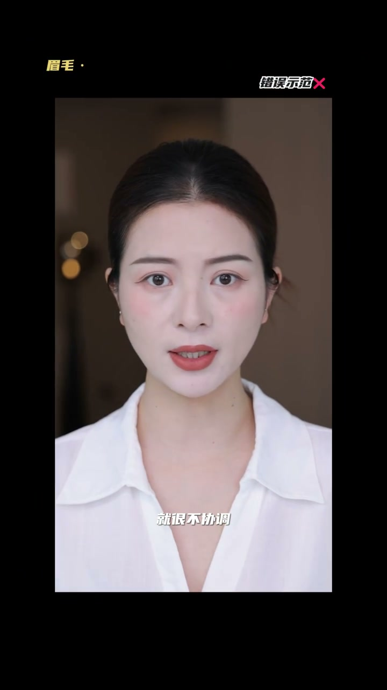
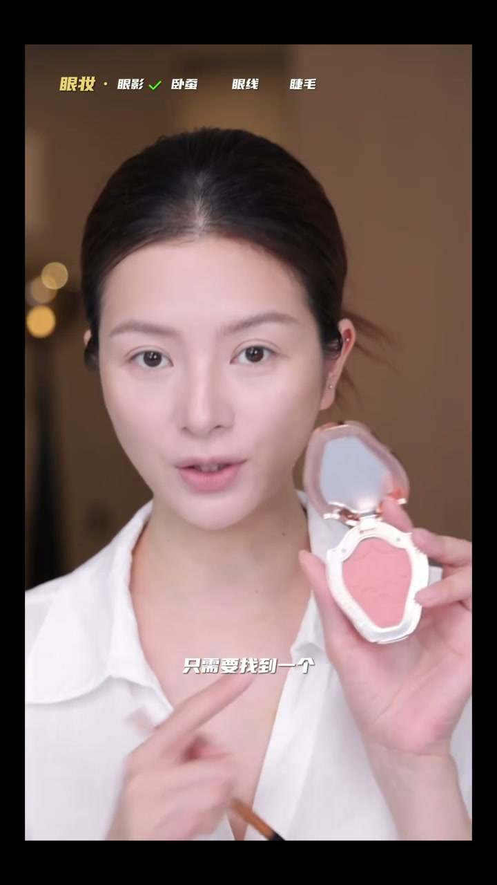
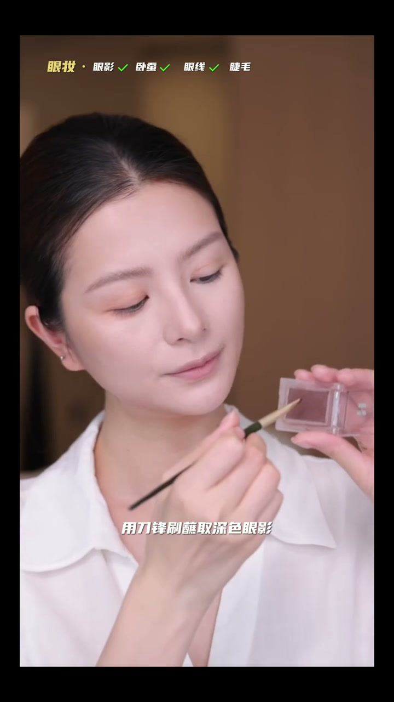
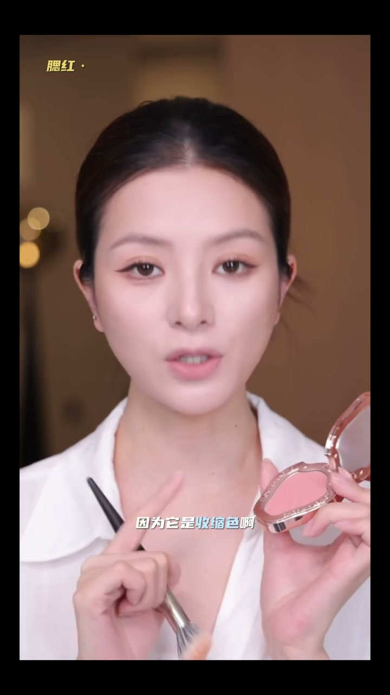

化结构、重轮廓，淡妆不淡人
00:00化五官、化结构、重色彩、重轮廓——同样的淡妆，完全不同的效果。化五官重色彩=扁平土气；化结构重轮廓=立体精致。
00:12今天学这个骨相贵气感淡妆，做到真正的淡妆不淡人。

底妆：粉底只上内轮廓
00:18大屏脸和小V脸的区别，就在于上粉底液的距离——整脸铺满就是显脸大，只上在内轮廓脸立马小一圈。
00:28粉底液不需要太多，用刷子薄薄蘸取一层。
00:32确定内轮廓：把脸侧过来，侧到只能看到眉峰最高点，沿这个点上下各画一条线再回正——这条就是内轮廓线，粉底液不能超过这条线。
00:48粉底从内往外铺：T区（瑕疵多毛孔大）粉量更多遮瑕力高，越往外粉量越少，余粉带过脸侧——面中亮、面侧暗的自然小脸效果。

修容：四笔头包脸 + 双C立体
01:13头包脸只需四笔修容：①连接额角与眉峰 ②连接眼尾与眉尾 ③侧面颧骨最高点连接发际线 ④嘴角垂直下来的点连接耳垂，然后往外晕开——视觉上收窄脸型。
01:35立体五官：山根的双C线从眼头开始，顺着眼眶骨画；鼻头画U可以抬高鼻尖缩小鼻头。晕染时双C向两头晕染、鼻头向外晕染，阴影自然衔接。
01:51之后加上提亮：面部中轴线（额头鼻梁鼻头下巴）+眼下的泪沟法令纹+颧骨位置向内——提高面部折叠度，底妆更干净精致。


眉毛：染浅 + 画毛流
02:27画五官很容易把眉毛画得颜色深、眉形不自然，淡妆配浓眉不协调。
02:30先用螺旋刷刷顺，再用染眉膏把眉毛染浅一点——浅眉让整个人更柔和。
02:36再用硬芯眉笔画毛流填补空隙：眉头向上画、眉中斜着画、眉尾倒着画——一个有形无边的眉毛就画好了。

眼妆：收缩色眼影 + 卧蚕 + 平拉眼线
02:56想要放大眼睛不需要太多眼影叠加，只需一个收缩色腮红：刷子蘸取把眼影范围预染大（不超过眼眶骨），可以包到眼头、位置稍稍往下。
03:09用窄刷蘸哑光高光提亮，在瞳孔正下方左右扫——刚好卧蚕宽度；想更精致蘸修容混一点点腮红加深卧蚕线——卧蚕自然不是干巴巴一条线。先提亮后加深，适合新手。
03:31加眼线：刀锋刷蘸深色眼影沿眼尾平拉向眼头画一条线，晕开虚化；眼线液笔加深睫毛根部——该实的地方实、该虚的地方虚。
03:46睫毛：夹的时候边夹边往上抬，夹出自然卷翘，刷上睫毛定型保持一整天。


腮红 + 口红：同色系收尾
04:02腮红还是同一块收缩色，从颧骨最高点往内打、斜向内扫——修饰脸型，外轮廓更流畅。
04:14口红：唇线不能太湿，颜色尽量跟眼影腮红色调一致。最重要的晕染三条线：唇峰左右匀染、唇中往外匀染、下唇下方匀染连接到嘴角，最后加唇蜜。
